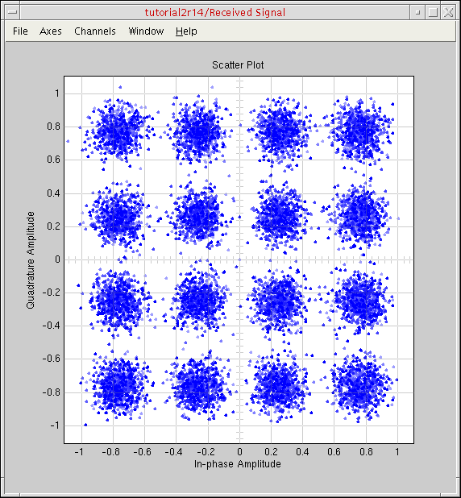

2
Running Cosimulation from ADE Using the Fixed-Cell Coupler
For information about the fixed-cell coupler, see “Creating the Coupler in the Schematic Window”.
To run cosimulation from ADE using the fixed-cell coupler, do the following:
-
If you have not already done so, open the RF Transmitter System Testbench config.
Shortcut: You can open the finished config/schematic that we provide with this tutorial:AMSDcouple/tb_ieee_802_11a_demo. - Open the Virtuoso Analog Design Environment (ADE) and set up the analysis.
- Choose xrun for simulation.
- View AMS simulator options.
- Specify values for the design variables.
- Set up the MATLAB/Simulink simulation to start before the AMS Designer simulation.
- Run cosimulation from ADE.
- Rerun the cosimulation after changing a design variable value.
- Run cosimulation by starting two simulations separately.
Opening ADE and Setting Up the Analysis
To open ADE and set up the analysis, do the following:
-
In the schematic window, choose Launch – ADE L.
Simulator: ams(Spectre) appears on the status bar.
-
Choose Analyses – Choose.
The Choosing Analyses form appears. -
In the Stop Time field, type
1m. -
Turn on the Enabled check box.
-
Click OK.
The analysis setup appears in the Analyses section of the ADE window.
Choosing xrun for Simulation
To choose xrun for simulation, do the following:
-
In ADE, choose Simulation – Netlist and Run Options.
The Netlist and Run Options form appears. -
In the NETLIST AND RUN MODE section at the top of the form, select OSS-based netlister with xrun.
Setting Up Design Variables
To set up design variables, do the following:
-
Copy the variables from the schematic by choosing Variables – Copy from Cellview in the ADE window.
Design variables from the schematic appear in the Design Variables section of the ADE window.
GAIN_PA controls the gain of the RF power amplifier. CP_PA controls the compression point of the RF power amplifier. The compression point is a measurement of the amplifier’s linearity/nonlinearity: The smaller the number, the larger the amplifier’s nonlinearity. -
In the Value column for GAIN_PA, click and type
35. -
In the Value column for CP_PA, click and type
24.
Starting MATLAB before AMS Starts
To set up MATLAB to start before AMS starts, do the following:
-
In ADE, choose Setup – MATLAB/Simulink – Start.
The Setup MATLAB form appears. By default Start MATLAB is no. -
For Start MATLAB, select before AMS starts.
This setting establishes a connection between the MATLAB/Simulink simulator and the AMS Designer simulator. The other fields on the form become active.
The default MATLAB start command ismatlab.
The default MATLAB start-up directory is your current directory (where you started your Cadence software).
The default delay to allow MATLAB initialization is 10 seconds. This delay allows MATLAB/Simulink to be ready and running when the AMS simulation starts. For successful cosimulation, you must coordinate start-up times such that MATLAB/Simulink is ready and running before AMS.You would set Start MATLAB to now to use the flow that runs the AMS Designer simulator and environment separate from the MATLAB/Simulink simulation. See “Running Cosimulation by Starting the Two Simulations Separately” for more information. -
In the MATLAB design name field, type
tutorial2r14.
-
Click OK.
You are ready to run cosimulation from ADE.
Running Cosimulation from ADE
To start cosimulation from ADE, do the following:
-
Choose Simulation – Netlist and Run (or click the green Netlist and Run button).
The testbench schematic appears in Simulink. The MATLAB Command Window does not appear. The AMS Designer simulator starts running. The cosimulation proceeds. Thesimulation.logandmatlab_ade.logfiles appear in separate windows. Simulation data appears in the Simulink Spectrum Scope and Received Signal windows.
The input spectrum and output spectrum are different owing to of the non-ideal RF transmitter chain.
Changing a Value and Rerunning Cosimulation
Once you are
-
In the ADE window, double-click the value for CP_PA and change it to
18(from 24). -
Click the run button (or choose Simulation – Netlist and Run).
The cosimulation runs again with the changed value.
The number of bit errors increases (you can view this information on the testbench scheamtic). The overall system behavior is still reasonable.
The scatter plot reflects the larger amplifier nonlinearity owing to the change to the value of the CP_PA design variable.

Running Cosimulation by Starting the Two Simulations Separately
Previously, we demonstrated how you can run a cosimulation from ADE by setting the Start MATLAB option to before AMS starts. To leverage the full funtionality of MATLAB, you can start MATLAB from ADE and run cosimulation by starting the two simulations separately.
Before beginning this part of the tutorial, do the following:
To run cosimulation by starting the two simulations separately, do the following:
Starting MATLAB Immediately
To set up MATLAB to start immediately, do the following:
-
In ADE, choose Setup – MATLAB/Simulink – Start.
The Setup MATLAB form appears. -
For Start MATLAB, select now.
The Start button appears.
See “Starting MATLAB before AMS Starts” for information about the before AMS starts selection. -
Click Start.
The MATLAB Command Window appears. The testbench schematic appears in Simulink. You are ready to cosimulate by starting the two simulations separately.
Starting the Two Simulations Separately
To start the two simulations separately, do the following:
-
In the Simulink testbench window, choose Simulation – Start.
Messages appear in the MATLAB Command Window. One of the messages is this:Waiting for incoming connection on port 5023, timeout: 120 sec ...
-
In the ADE window, choose Simulation – Netlist and Run (or click the Netlist and Run button) before this time interval expires.
Once thexmsimsimulation starts, the two applications establish a connection and the cosimulation proceeds. When the cosimulation finishes, the Spectrum Scope and Received Signal graph windows appear. You can view the number of bit errors on the testbench schematic.
If you want to rerun the simulation, you will need to start Simulink and ADE again separately.
Return to top